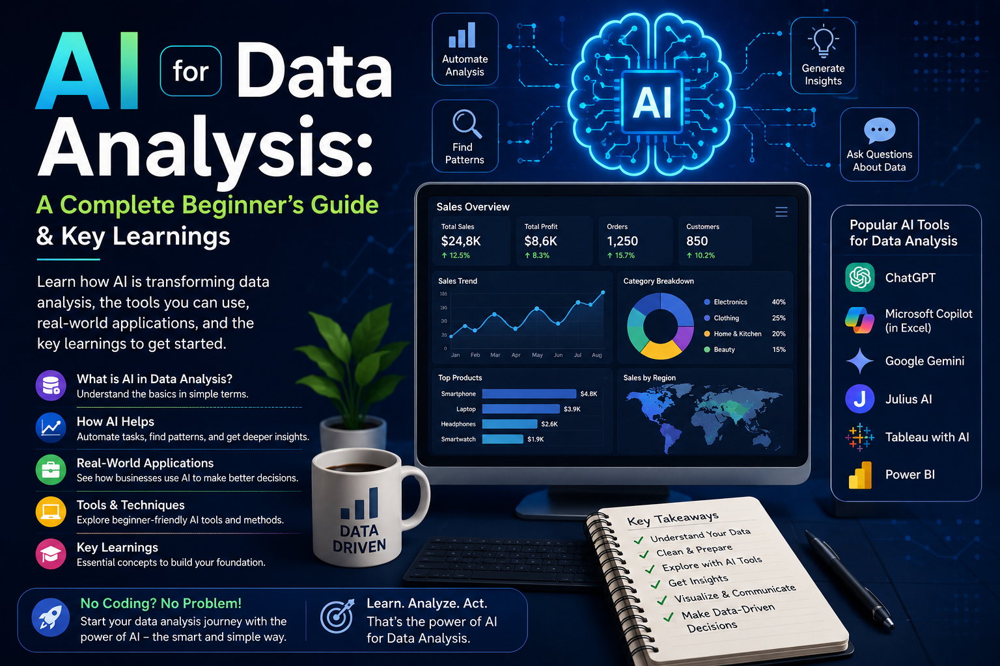

Author: Anil Lama
Published: August 2026

I am currently taking the AI for Data Analysis course through the AI Association Nepal Google Learning Program, and I could not be more thrilled to share what I have been learning! Navigating through the modules has been an incredible experience—concepts that once seemed complex are finally falling into place and making complete sense.
Whether you are trying to understand sales trends, clean a messy spreadsheet, or build predictive business reports, artificial intelligence is fundamentally changing how we interact with numbers.
At its core, AI for Data Analysis refers to using machine learning models, statistical algorithms, and natural language processing (NLP) to automate, accelerate, and elevate the process of turning raw data into actionable insights.
Instead of manually writing complex nested formulas or spending hours wrangling dirty datasets, AI allows analysts to interact with data conversationally, detect hidden patterns automatically, and generate predictive forecasts in a fraction of the time.
Traditional data tools require human operators to know what questions to ask and how to write the code (SQL queries, Python scripts, or Excel macros) to extract answers. AI flips this workflow on its head through two core breakthroughs:
From raw, unorganized rows to an executive report, AI transforms the traditional data analysis pipeline across four distinct stages:
Did You Know? Data scientists traditionally spend up to 80% of their time just cleaning and preparing raw data. AI tools reduce this prep time down to a fraction, allowing analysts to focus on strategy.
When diving into AI-driven analytics, you will constantly hear these foundational terms:
| Dimension | Traditional Spreadsheets | SQL / Python | AI-Powered Analytics |
|---|---|---|---|
| Primary Interface | Grid cells & manual formulas. | Scripts, queries, & notebooks. | Conversational prompts & low-code UI. |
| Data Scale | Limited (hundreds of thousands of rows). | High (billions of database records). | Scalable (petabytes via cloud integrations). |
| Speed to Insight | Slow; manual calculations. | Moderate; requires custom code. | Near-Instant; automated cleaning & insights. |
| Technical Barrier | Low to Moderate. | High (requires programming). | Low (accessible via plain language). |
AI is being applied in practical scenarios across multiple domains:
Despite its power, relying on AI blindly introduces operational risks:
The future lies in autonomous AI data agents that continuously monitor live metrics, detect drops, investigate root causes, and present actionable solutions directly to managers—democratizing data science for non-technical teams.
My journey through the AI Association Nepal Google Learning Program has shown me that AI is not here to replace human data analysts—it is here to empower us. By handling tedious data preparation and automating scripting, AI frees us to focus on critical thinking and business strategy.
Do I need to be a programmer to use AI for data analysis?
No! While basic statistical understanding helps, modern AI tools allow you to perform sophisticated analyses using plain language prompts without writing code.
Will AI completely replace human Data Analysts?
Unlikely. AI automates data processing, but human expertise remains essential for context interpretation, business strategy, and ethical oversight.
How does AI handle messy or missing data?
AI models use advanced statistical techniques to analyze existing patterns, fill in missing values, remove duplicates, and fix formatting errors automatically.
What is the best way to start learning AI for data analysis?
Master foundational data concepts, practice writing clear prompts using tools like ChatGPT Advanced Data Analysis or Gemini, and join community programs like the AI Association Nepal initiative!
© 2026 Anil Lama • anillama.com.np